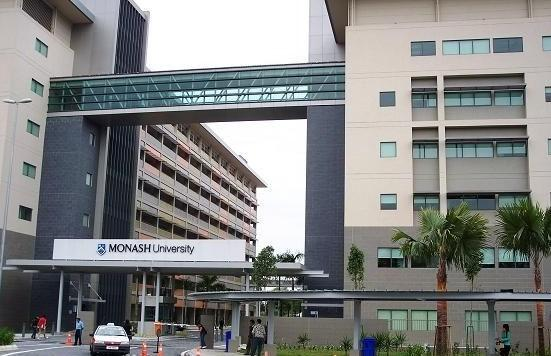
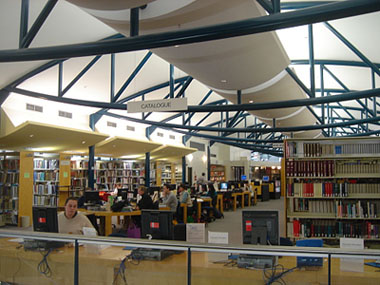
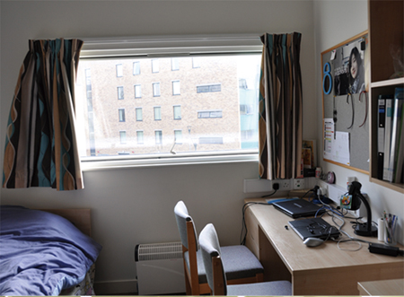
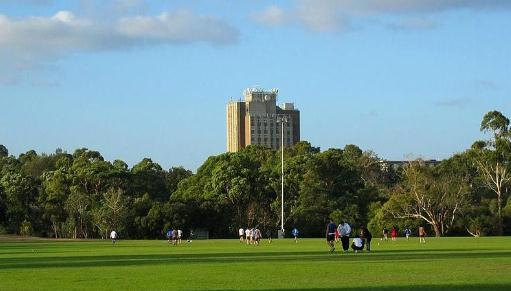

Monash University School Website http://www.monash.edu.au/ School Overview Founded in 1961, Monash University is an internationally renowned institution. It has now developed into the largest university in Australia and is one of the best universities in the country. Monash...
Monash University

School website http://www.monash.edu.au/
School Overview
Founded in 1961, Monash University is an internationally renowned institution. It has now grown into the largest university in Australia and is one of the best universities in the country. Monash University prides itself on being a member of the Group of Eight Prestigious Universities in Australia, which consists of eight top Australian universities dedicated to high-quality education, research, and academic achievement. Monash University has 10 departments covering various fields, with campuses located near Melbourne, Australia's second-largest city, where the climate is pleasant and the environment is beautiful.
In terms of school facilities and services, Monash University not only provides students with entertainment, medical care, scientific experiments, financial and legal assistance, but also offers various accommodation options (such as campus buildings, campus apartments, student hostels, private apartments, and residential families), banks, post offices, health centers, comprehensive sports facilities, computer centers, cinemas, and arts performance centers. The school is located on Mt. Buller has a snow mountain lodge available for rent to students or individuals. All campuses are close to train stations, and students can also take the subway, tram, or bicycle, making transportation very convenient.
School facilities and services
The learning environments at Monash University's campuses are elegant and international, yet vibrant and energetic. Each year, they attract international students from over 100 countries, and each campus has international student offices offering five-star international services. The university has over 100 student clubs that enrich the extracurricular life of all types and cater to all kinds of interests. Located among the top three in Australia, the library offers a collection of over 2.3 million volumes and more than 18,000 periodicals.

Accommodation
Students have a variety of options, such as campus accommodation (available at most campuses), homestay, full or partial boarding, guesthouses, and rents. Registered students will receive a "Guide to Accommodation for Overseas Students." It provides general accommodation conditions and requirements. Staff can also assist students in finding suitable housing.

Geographical location
The main campus is located in Melbourne, Australia. There are six campuses in Melbourne and surrounding areas, as well as campuses in Kuala Lumpur, Malaysia, and Johannesburg, South Africa, totaling eight campuses.
Transportation: Students can use bicycles, ride the student union's hitchhike services, or use convenient public transportation. All campuses are close to train stations, and you can take the subway or tram at Caulfield, Gippsland, and Parkville, making transportation very convenient.
School rankings A five-star university, one of the eight top schools, ranked 31st in the Times 2007 World Comprehensive Rankings
Number of teachers and students Monash University has more than 53,000 students, including more than 14,000 international students from over 100 countries and regions. The university has 4,982 staff members and 2,423 teaching teachers. 
City Overview Melbourne is a distinctive city with a nostalgic British style. It has a temperate climate with distinct seasons: average summer temperatures of 14-25°C, winters of -6-13°C, and mild weather in spring and autumn. Lush trees and colorful flowers are everywhere. This typical park city has over 400 parks, filled with green spaces and gardens.
Honors and characteristics
· One of Australia's eight major universities;
Monash University is Australia's largest and most international university, with the largest number of students enrolled in comprehensive universities
· The world's largest atomic accelerator will be built at Monash University;
Monash University boasts world-class research achievements, teaching quality, and world-class international student services;
· Monash University has its own Monash College, offering guaranteed fast-track courses for second-year, third-year, and junior college students, allowing direct admission to the second year of Monash through these fast courses;
· The top three libraries in Australia offer collections exceeding 2.3 million volumes and more than 18,000 periodicals;
· Graduates have outstanding academic abilities, strong self-learning skills, team spirit, a tendency to innovate and reform, and the ability to serve as leaders. These qualities make them highly sought after by employers, with the highest employment rate in Australia, and graduates earn the highest salaries among Australian university students;
· Monash University graduates hold key positions in government agencies, multinational corporations, and academia, including: Australian Chancellor of the Exchequer, Executive Chairman of Kuala Lumpur Stock Exchange, President of Singapore Stock Exchange, President of Singapore Port, Health Supervisor of Malaysia, former Chief Foreign Affairs Advisor for Indonesia, Chief Organ Transplant Doctor in Singapore, and Senior Administrator of Bank of Thailand
Specialized Settings
Majors: Design, Multimedia, Literature, Applied Economics, Applied Finance, Banking, Management, Marketing, Professional Accounting, MBA, Psychology, Education, Software Engineering, Information Technology, Communication Engineering, Engineering, Applied Information Technology, Computer Science, Law, Biomedicine, Nursing
Preparatory course
Monash University has its own Monash College, offering guaranteed fast-track courses for second, second, and junior college students, allowing direct admission to the second year of Monash through the fast-track courses.
Monash University has its own English teaching center, offering a variety of English-supporting courses for international students, including basic English courses, advanced English courses, IELTS English courses, direct English courses, and professional English courses.
Admission requirements
Undergraduate English score requirement: IELTS 6.5 (no section below 6.0)
Master's English proficiency requirement: IELTS 6.5 (no section below 6.0)
莫纳什大学 Monash University
学校网站 http://www.monash.edu.au/
学校概况
莫纳什大学创建于1961年，是一所国际知名学府。现在已经发展成为澳大利亚最大的大学，是澳大利亚最好的大学之一。莫纳什大学以身为澳大利亚八大名校联盟成员之一为豪，该联盟的成员是澳大利亚八所投身并致力于高质量的教育，科研及学术成就的澳大利亚顶级大学。莫纳什大学拥有10个覆盖各个领域的系科，校区分布在澳大利亚第二大都市墨尔本市的附近，当地气候宜人，环境优美。
在学校设施及服务方面，莫纳什大学除了为学生提供娱乐、医疗、科学实验、财务和法律协助之外，还提供各种方式的住宿（如：校舍、校区公寓、学生旅馆、私人公寓和住宿家庭）、银行、邮局、保健中心、完备的体育设施、计算机中心、电影院、艺术表演中心等。学校在Mt. Buller有一间雪山旅馆，可出租给本校学生或个人使用。学校的各个校园都靠近火车站，学生还可乘地铁、有轨电车、骑自行车，交通十分便利。
学校设施和服务
莫纳什大学各个校区的学习环境是幽雅的，国际化的，同时又是充满活力，朝气蓬勃的， 每年吸引着100多个国家的留学生前来求学，各个校园设有国际留学生办公室，为留学生提供五星级留学生服务。大学拥有100多个学生俱乐部，可以丰富各类学生的业余生活和满足各类学生的爱好。位于全澳大利亚前第三位的图书馆可提供超过230万册的藏书及18000余册期刊。
住宿
学生可有多种选择，如：校园住宿(大部分分校均可)，家庭寄宿，全部或部分寄膳，招待所，租房。已注册的学生会收到“海外学生住宿指南”。上面提供了住宿的大致条件及要求。工作人员也可协助学生找到适宜居所。
地理位置
主校区位于澳大利亚墨尔本市。在墨尔本及周围分部有六个校区，此外还有校园位于马来西亚吉隆坡及南非约翰内斯堡，共有八个校区。
交通状况 学生可以利用自行车，搭乘学生会提供的便车服务或者利用便利的公共交通，各个校园都靠 近火车站，在Caulfield、Gippsland、Parkville校园可以乘地铁、有轨电车，交通十分方便。
学校排名 五星级大学，八大名校之一，泰晤士2007世界综合排名31名
师生数量 莫纳什大学共有53,000多名学生，有14,000多名国际留学生，来自100多个国家和地区。4982名学校员工，2423名教学老师。
城市概况 墨尔本是一个很有特色的城市，具有英国的怀旧风格。属温带气候，这里四季分明，夏季平均摄氏14-25度，冬季摄氏-6-13度，春秋两季气候温和。到处可见郁郁葱葱的树木和五彩缤纷的花卉。这个典型的公园城市，有公园 400多座，到处是绿地和花园.
荣誉和特色
·澳洲八大院校之一；
·莫纳什大学是澳大利亚最大的，最国际化的大学，在校学生最多的综合大学
·世界最大的原子能加速器将建在莫纳什大学；
·莫纳什大学具有世界一流的科研成果，教学质量及世界一流的留学生服务；
·莫纳什大学拥有自己的莫纳什学院，为高二，高三及大专学生提供有保证的快捷课程，通过快捷课程直接进入莫纳什大学二年级；
·全澳大利亚前三位的图书馆可提供超过230万册的藏书及18000余册期刊；
·毕业生学术能力出众，自学能力强、有团队合作精神、善于改革创新、能够担任领导者，这些特点 广受雇主欢迎，就业率全澳第一，毕业生所获得的薪水达到澳洲大学生中的最高水平；
·莫纳什大学毕业生在政府机关、跨国公司及学术界中担任要职其中有：澳大利亚财政大臣、吉隆坡股票交易所执行主席、新加坡股票交易所总裁、新加坡港总裁、马来西亚健康督导、前印尼总外事顾问、新加坡首席器官移植医生、泰国银行高级行政官
专业设置
专业：设计，多媒体，文学，应用经济学，应用金融学，银行学，管理，市场营销，专业会计，MBA，心理学，教育，软件工程，信息技术，通信工程，工程学，应用信息技术，计算机科学，法律，生物医药学，护理
预备课程
莫纳什大学拥有自己的莫纳什学院，为高二，高三及大专学生提供有保证的快捷课程，通过快捷课程直接进入莫纳什大学二年级。
莫纳什大学拥有自己的英文教学中心，为国际留学生提供各种英文配套课程，其中包括基础英文课程，高级英文课程，雅思英文课程，英语直生课程，专业英文课程等。
入学要求
本科英语成绩要求：雅思 6.5分（单项不低于6.0分）
硕士英语成绩要求：雅思 6.5分（单项不低于6.0分）
English edition. Select 中文原文 to compare with the original Chinese article.
This article is edited and published by Liaoning Overseas Study Service Co., Ltd. The content is for study abroad planning reference only. Unauthorized reproduction is prohibited.
Information on policies, regulations, admissions brochures, and program fees is timely. Please refer to the latest releases from official institutions and institutions in various countries; For detailed verification, please Contact an advisor。